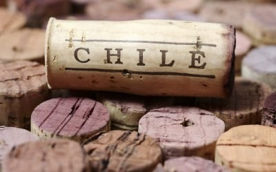
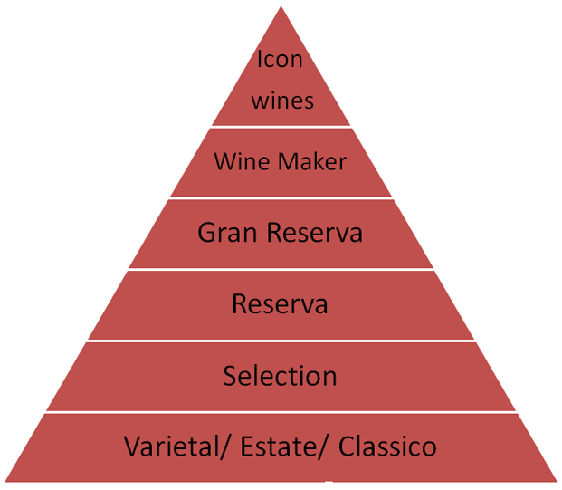

copy.jpg)
TỔNG QUAN
Chile một quốc gia nổi tiếng về sản xuất rượu vang cao cấp, lâu đời có thể sánh với dòng vang pháp nổi tiếng. Rượu Vang chile hảo hạng có vùng trồng nho có lịch sử lâu đời, vùng rượu vang thế giới mới có niên đại vào thế kỷ 16.
Chile có địa hình giống quả ớt nằm giữa dãy núi Andes và biển Thái Bình Dương chính vị trí đó đã tạo điều kiện cho các loại nho phát triển mạnh .Lại có khí hậu điều hòa cùng sợ che chở của dãy núi Andes nên nho ở đây rất ngon và đặc trưng.
ĐẶC ĐIỂM CỦA VANG CHILE
Rượu vang chile có đặc điểm là có thể uống ngay trong năm sản xuất mà hương vị lại ngon không bị gắt giống như vang pháp phải để một thời gian. Rượu vang của Chile có hương vị đặc trưng của giống nho cùng với đã có đủ hương đậm đà, lên men từ nho đỏ và hương vani quyến rũ.
Công ty Vinacom chuyên cung câp các dòng rượu vang chile nhập khẩu cao cấp , có xuất sứ và nguồn gốc ró dàng mang đến cho khách hàng sự đảm bảo về chất lượng, và sự tư vấn nhiệt tình nhất đối với sự lựa chọn của bản.
XẾP HẠNG VANG CHILE
Có 6 cấp bậc trong hệ thống luật lệ rượu vang của Chi-lê, từ thấp đến cao là Garantia de Origen, Vino de Crianza, Reserva, Gran Reserva, Wine Maker và Icon wines.
1.Varietal hoặc Estate hoặc Classico (Garantia de Origen)
Tùy theo rượu vang được sản xuất từ giống nho nào và vùng nào mà nó có thể được đặt tên là Varietal hoặc Estate hoặc Classico. Đây đều là những chai vang trẻ, chất lượng vừa uống và không được ngâm ủ trong thùng gỗ sồi. Những loại rượu vang này thường được bán ra thị trường từ 3-6 tháng sau vụ nho. Nếu bảo quản tốt, hạn sử dụng của các chai vang này có thể lên tới 2 năm.
2.Selection (Vino de Crianza)
Trên Varietal là cấp Selection, gồm những chai rượu vang có chất lượng cao hơn, không ủ hoặc chỉ ủ trong thùng gỗ sồi từ 3 – 6 tháng. Mùi vị của rượu đậm đà hơn, hương vị hấp dẫn hơn nên giá cũng cao hơn cấp Varietal. Nếu bảo quản tốt, các chai vang này có thể tích trữ đến 30 tháng.
3. Reserva
Rượu vang từ cấp này trở lên đều thuộc vào hàng tương đối ngon và ngon của Chi-lê. Rượu vang Reserva được ủ trong thùng gỗ sồi khoảng 6 – 8 tháng và tiếp tục giữ trong chai thêm 6 tháng nữa được khi được bán ra thị trường. Vị rượu vì thế cũng đậm đà và đầy đặn hơn. Trong điều kiện bảo quản tốt, các chai vang này có thể để tới 4 năm mà uống vẫn ngon.
4.Gran Reserva
Đây là cấp bậc chứa những chai vang ngon của Chi-lê. Thông thường, rượu Gran Reserva được ủ trong thùng gỗ sồi từ 12 đến 18 tháng và tiếp tục được ủ trong chai thêm 1 – 2 năm nữa rồi mới được đem bán.
Rượu vang Gran Reserva được làm từ những vườn nho ngon và đã được trồng ít nhất là 12 năm. Các chai vang có độ ngon không giống nhau, tùy thuộc vào từng vùng nho, tuổi cây nho và phương pháp làm rượu. Rượu ngon thì để được càng lâu, thông thường là 4 – 8 năm nếu được bảo quản đúng cách. Nhiều hãng rượu chỉ sản xuất đến Gran Reserva là cấp cao nhất của họ.
5. Wine Maker/ Premium wines/ Limited Edition/ Gran Cuvee hoặc Familly Collection
Trên Gran Reserva, nhà sản xuất có thể đặt tên cấp độ rượu như kể trên, gồm những chai vang cao cấp hơn Gran Reserva vì loại nho, vùng nho được sử dụng được chọn lựa rất kỹ càng. Đôi khi, để nhấn mạnh chất lượng chai rượu vang thì người ta còn ghi cả vùng trồng nho và sản lượng thu hoạch cụ thể của mỗi vụ nho trên chai. Loại vang này cũng được ngâm ủ trong thùng gỗ sồi tương đương với Gran Reserva hoặc hơn vài ba tháng, tuổi thọ của nó có thể kéo dài lên 8 năm.
6.Icon wines/ Ultra Premium
Đây là những chai rượu thuộc hàng cao cấp nhất của Chi-lê. Chỉ một số ít các hàng rượu mới làm ra được loại rượu này, và cũng không phải mùa nho nào cũng tạo ra được những chai vang được xếp vào hạng Icon wines.
Liên hệ
- Mr Hiệp: 0906225896
- nthiep.2508@gmail.com
Địa chỉ
- 2A Hàng Nón, Hoàn Kiếm, Hà Nội
- Giờ mở cửa: từ 9:00 đến 22:00
.jpeg)